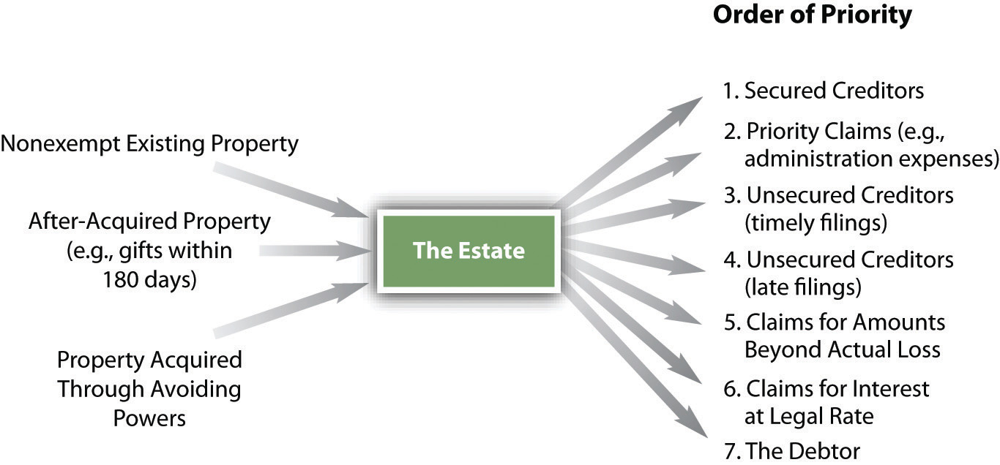

Except as noted, the provisions discussed up until now apply to each type of bankruptcy proceeding. The following discussion is limited to certain provisions under Chapter 7.
In addition to the duties already noted, the trustee has other duties under Chapter 7. He must sell the property for money, close up the estate “as expeditiously as is compatible with the best interests of parties in interest,” investigate the debtor’s financial affairs, examine proofs of claims, reject improper ones, oppose the discharge of the debtor where doing so is advisable in the trustee’s opinion, furnish a creditor with information about the estate and his administration (unless the court orders otherwise), file tax reports if the business continues to be operated, and make a final report and file it with the court.
Under Section 706 of the bankruptcy code, the debtor may convert a Chapter 7 case to Chapter 11, 12, or 13 at any time. The court may order a conversionIn bankruptcy, changing the chapter number filed from one to another. to Chapter 11 at any time upon request of a party in interest and after notice and hearing. And, as discussed next, a case may be converted from Chapter 7 to Chapter 13 if the debtor agrees, or be dismissed if he does not, in those cases where the debtor makes too much money to be discharged without it being an “abuse” under the 2005 act.
The court may dismiss a case for three general reasons.
The first reason is “for cause,” after notice and a hearing for cause, including (1) unreasonable delay by the debtor that prejudices creditors, (2) nonpayment of any fees required, (3) failure to file required documents and schedules.
The second reason for dismissal (or, with the debtor’s permission, conversion to Chapter 11 or 13) applies to debtors whose debt is primarily consumer debt: the court may—after notice and a hearing—dismiss a case if granting relief would be “an abuse of the provisions” of the bankruptcy code.
The third reason for dismissal is really the crux of the 2005 law: under it, the court will find that granting relief under Chapter 7 to a debtor whose debt is primarily consumer debt is “an abuse” if the debtor makes too much money. The debtor must pass a means test: If he’s poor enough, he can go Chapter 7. If he is not poor enough (or if they are not, in case of a married couple), Chapter 13—making payments to creditors—is the way to go. Here is one practitioner’s explanation of the means test:
To apply the means test, the courts will look at the debtor’s average income for the 6 months prior to filing [not the debtor’s income at the time of filing, when—say—she just lost her job] and compare it to the median income for that state. For example, the median annual income for a single wage-earner in California is $42,012. If the income is below the median, then Chapter 7 remains open as an option. If the income exceeds the median, the remaining parts of the means test will be applied.
The next step in the calculation takes monthly income less reasonable living expenses [“reasonable living expenses” are strictly calculated based on IRS standards; the figure excludes payments on the debts included in the bankruptcy], and multiplies that figure times 60. This represents the amount of income available over a 5-year period for repayment of the debt obligations.
If the income available for debt repayment over that 5-year period is $10,000 or more, then Chapter 13 will be required. In other words, anyone earning above the state median, and with at least $166.67 per month ($10,000 divided by 60) of available income, will automatically be denied Chapter 7. So for example, if the court determines that you have $200 per month income above living expenses, $200 times 60 is $12,000. Since $12,000 is above $10,000, you’re stuck with Chapter 13.
What happens if you are above the median income but do NOT have at least $166.67 per month to pay toward your debts? Then the final part of the means test is applied. If the available income is less than $100 per month, then Chapter 7 again becomes an option. If the available income is between $100 and $166.66, then it is measured against the debt as a percentage, with 25% being the benchmark.
In other words, let’s say your income is above the median, your debt is $50,000, and you only have $125 of available monthly income. We take $125 times 60 months (5 years), which equals $7,500 total. Since $7,500 is less than 25% of your $50,000 debt, Chapter 7 is still a possible option for you. If your debt was only $25,000, then your $7,500 of available income would exceed 25% of your debt and you would be required to file under Chapter 13.
To sum up, first figure out whether you are above or below the median income for your state—median income figures are available at http://www.new-bankruptcy-law-info.com. Be sure to account for your spouse’s income if you are a two-income family. Next, deduct your average monthly living expenses from your monthly income and multiply by 60. If the result is above $10,000, you’re stuck with Chapter 13. If the result is below $6,000, you may still be able to file Chapter 7. If the result is between $6,000 and $10,000, compare it to 25% of your debt. Above 25%, you’re looking at Chapter 13 for sure.Charles Phelan, “The New Bankruptcy Means Test Explained in Plain English,” Buzzle.com, http://www.buzzle.com/editorials/1-10-2006-85999.asp.
The law also requires that attorneys sign the petition (as well as the debtor); the attorney’s signature certifies that the petition is well-grounded in fact and that the attorney has no knowledge after reasonable inquiry that the schedules and calculations are incorrect. Attorneys thus have an incentive to err in favor of filing Chapter 13 instead of Chapter 7 (perhaps that was part of Congress’s purpose in this section of the law).
If there’s been a dismissalAn order terminating a case before its normal end., the debtor and creditors have the same rights and remedies as they had prior to the case being commenced—as if the case had never been filed (almost). The debtor can refile immediately, unless the court orders a 120-day penalty (for failure to appear). In most cases, a debtor can file instantly for a Chapter 13 following a Chapter 7 dismissal.
The estate includes all his or her assets or all their assets (in the case of a married couple) broadly defined. From the estate, the debtor removes property claimed exempt; the trustee may recapture some assets improperly removed from the estate (preferential and fraudulent transfers), and what’s left is the distributable estate. It is important to note that the vast majority of Chapter 7 bankruptcies are no-asset casesA bankruptcy case with no nonexempt property.—90–95 percent of them, according to one longtime bankruptcy trustee.Eugene Crane, Hearing before the Subcommittee on Commercial and Administrative Law of the Committee on the Judiciary, House of Representatives, One Hundred Tenth Congress, Second Session, Statement to the House Judiciary Sub-Committee, September 16, 2008; http://judiciary.house.gov/hearings/printers/110th/44493.PDF. That means creditors get nothing. But in those cases where there are assets, the trustee must distribute the estate to the remaining classes of claimants in this order:
Figure 35.3 Distribution of the Estate
Once the estate is distributed, the court will order the debtor discharged (except for nondischargeable debts) unless one of the following overall exceptions applies for denying dischargeThe determination that debts are no longer owing. (i.e., relief from the debt). This list is not exhaustive:
A discharge may be revoked if the debtor committed fraud during the bankruptcy proceedings, but the trustee or a creditor must apply for revocation within one year of the discharge.
Having the discharge deniedRefusal of a bankruptcy court to allow discharge, usually because the debtor has acted in bad faith. does not affect the administration of the bankruptcy case. The trustee can (and will) continue to liquidate any nonexempt assets of the debtor and pay the creditors, but the debtor still has to pay the debts left over.
As to any consequence of discharge, bankruptcy law prohibits governmental units from discriminating against a person who has gone through bankruptcy. Debtors are also protected from discrimination by private employers; for example, a private employer may not fire a debtor because of the bankruptcy. Certainly, however, the debtor’s credit rating will be affected by the bankruptcy.
A Chapter 7 bankruptcy case may be dismissed for cause or because the debtor has abused the system. The debtor is automatically considered to have abused the system if he makes too much money. With the debtor’s permission, the Chapter 7 may be converted to Chapter 11, 12, or 13. The law requires that the debtor pass a means test to qualify for Chapter 7. Assuming the debtor does qualify for Chapter 7, her nonexempt assets (if there are any) are sold by the trustee and distributed to creditors according to a priority set out in the law. A discharge may be denied, in general because the debtor has behaved dishonestly or—again—has abused the system.